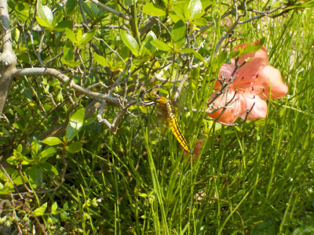
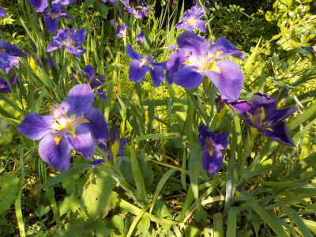
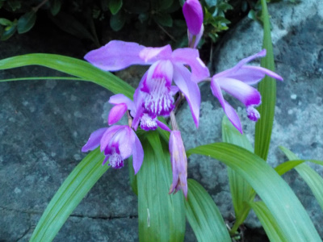
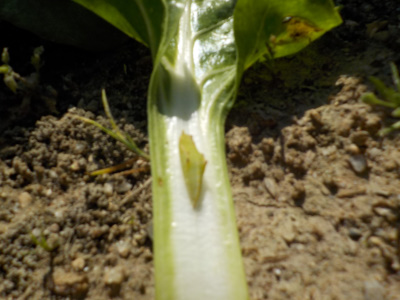
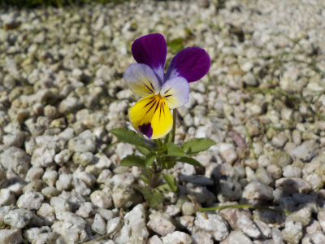
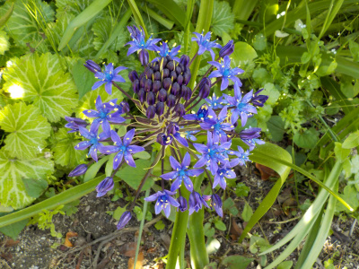
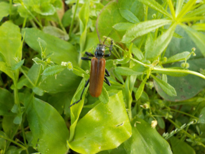

小さくて黄色いトンボが飛んでいました。
2022/05/22

トンボがいたので写真を撮りました。
検索で調べたらハラビロトンボって名前のようです。シオカラトンボの小さいやつかと思ったら違っていました。
2022/05/22

トンボがいたので写真を撮りました。
検索で調べたらハラビロトンボって名前のようです。シオカラトンボの小さいやつかと思ったら違っていました。
2022/05/22

畑の隅っこの方で色々な色の花菖蒲が咲いています。
このタイプの花が一番多いです。たぶん強いんでしょうね。
2022/05/14

シランはキレイですね。
でも近くで見るとちょっと不気味。
2022/05/05

堂々と葉っぱの真ん中でサナギになっています。
ビタミン菜は硬くて食べにくかったかな？サナギが小さい。
2022/05/05

種が落ちて庭に生えてるスミレです。他の草は抜きましたがスミレは抜きませんでした。
白砂の場所で何もない方がいいですけど、スミレは特別待遇です。
2022/05/05

大きくて複雑な形状の花です。木の下でちょっとずつ増えています。
他の植物と競って増えてるんだから強いんだろうな。
2022/05/04

ネットで調べたところ「ヒメスギカミキリ」のような「アカハナカミキリ」のような「テツイロヒメカミキリ」のような。
似てて違いがわかりません。
沢山いるってことは近くの木が食べられてんでしょう。
過去の日記
畑仕事じゃないよ。